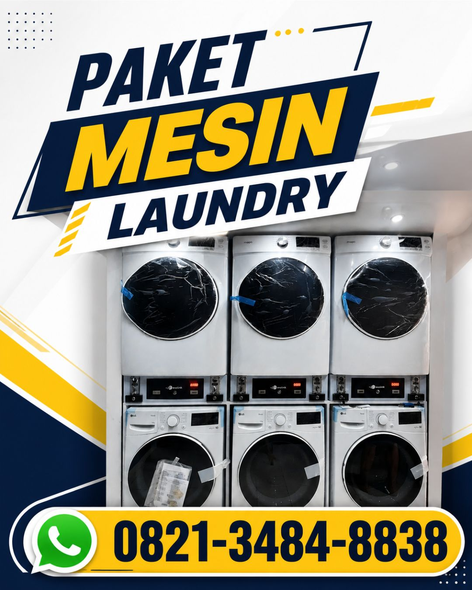

Solusi Mesin Laundry Koin Modern untuk Mendukung Usaha Laundry Self Service dan Laundry Profesional di Fakfak

BOS Mesin Laundry menyediakan berbagai pilihan mesin laundry koin yang siap dikirim ke Fakfak. Tersedia mesin cuci koin, mesin pengering, serta perlengkapan pendukung yang dapat digunakan untuk membangun usaha laundry self service maupun mengembangkan bisnis laundry yang telah berjalan. Setiap mesin dipilih untuk memberikan performa yang stabil dan mudah digunakan dalam operasional sehari-hari.
Pilihan mesin tersedia dalam berbagai kapasitas sehingga dapat disesuaikan dengan kebutuhan usaha, baik untuk laundry kiloan, laundromat, hotel, apartemen, rumah kos, hingga fasilitas komersial lainnya. Selain itu tersedia pula sistem pembayaran digital seperti QRIS yang memberikan kemudahan bagi pelanggan dalam melakukan transaksi tanpa harus menggunakan uang tunai.
Tidak hanya menyediakan mesin, BOS Mesin Laundry juga memberikan layanan konsultasi, rekomendasi paket usaha, instalasi, serta pendampingan penggunaan mesin. Dengan dukungan pengiriman ke Fakfak dan layanan purna jual, pelanggan dapat memperoleh solusi laundry yang lebih praktis, efisien, dan siap mendukung perkembangan usaha dalam jangka panjang.
Hubungi BOS Mesin Laundry melalui WhatsApp untuk memperoleh informasi mengenai spesifikasi mesin, pilihan kapasitas, paket usaha laundry, estimasi pengiriman, maupun konsultasi sesuai kebutuhan usaha Anda.
WhatsApp 0821-3484-8838
Jalan Werkudara RT 09 RW 01
Tundan, Purwomartani
Kalasan, Sleman
Yogyakarta